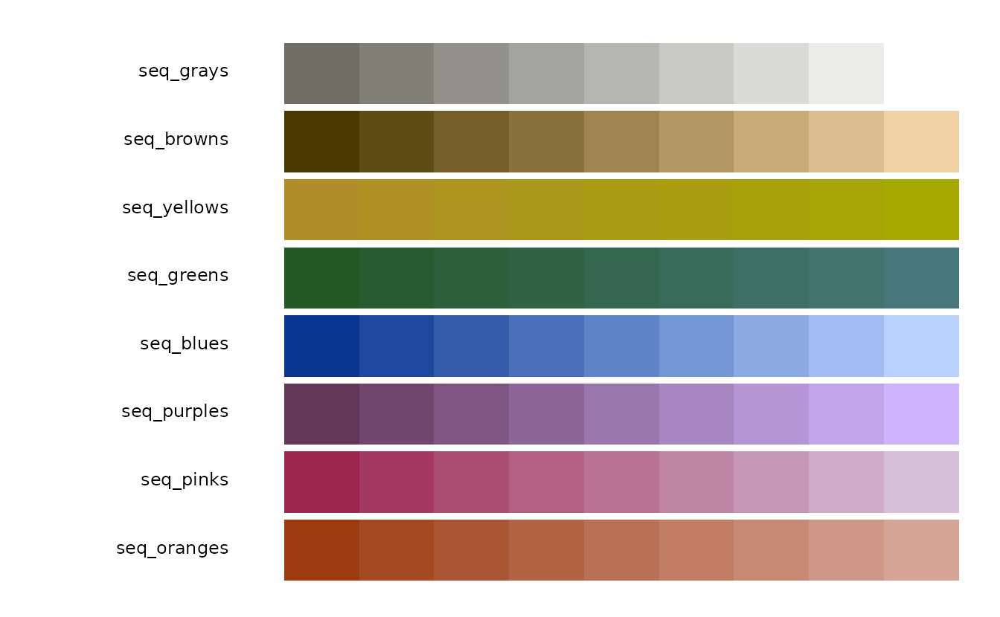
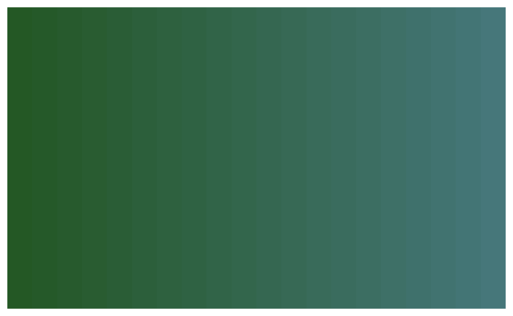
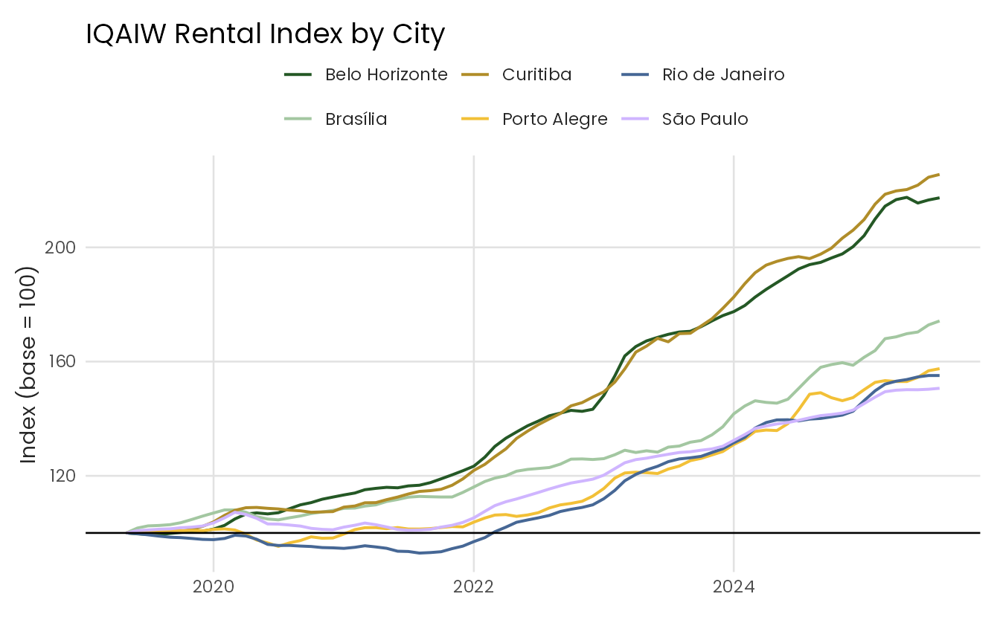
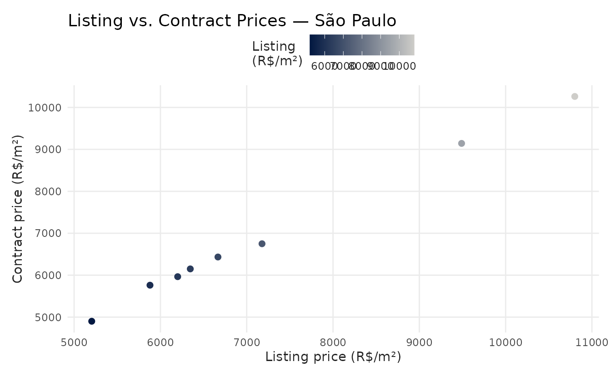
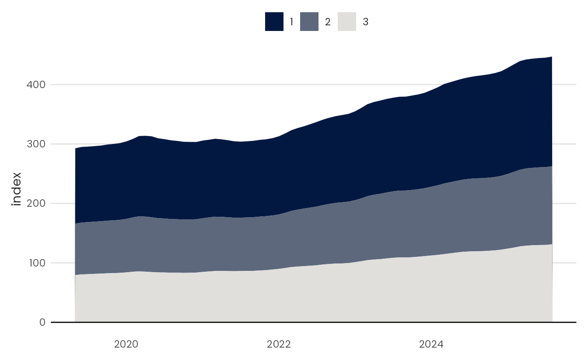
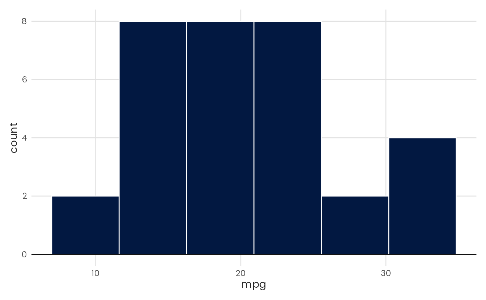
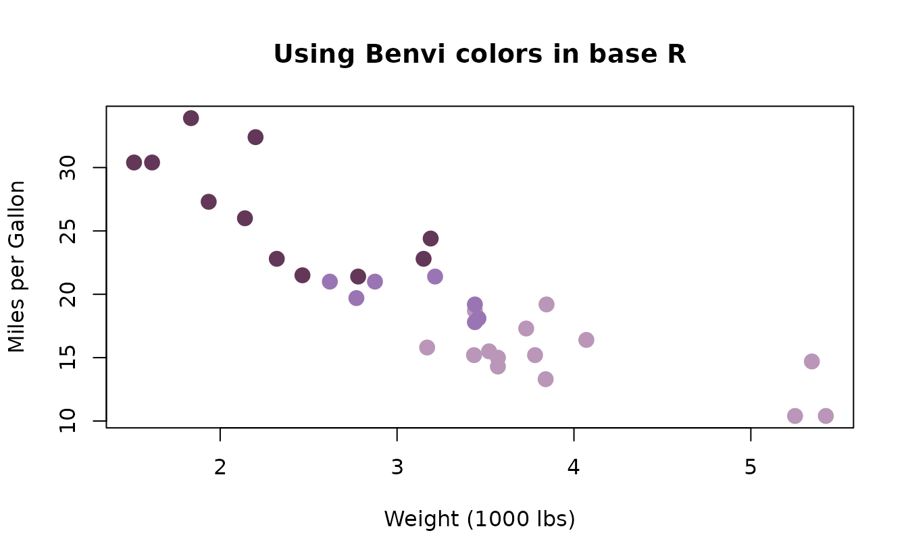

Introduction
benviplot provides color palettes and ggplot2 helper
functions for exploratory data analysis. The color schemes are based on
Benvi, a brand of the Brazilian proptech QuintoAndar.1 The package includes a
custom ggplot2 theme, discrete and continuous color scales, and wrappers
for common chart types.
Installation
# Install remotes if needed
install.packages("remotes")
remotes::install_github("viniciusoike/benviplot")Optional font setup
benviplot bundles the Poppins font family. When both
systemfonts and ragg are available, the
package registers Poppins and theme_benvi() uses it by
default. Otherwise, the theme uses the system sans-serif font.
Install ragg to render Poppins in PNG files. Base PDF
and PostScript devices cannot use fonts registered through
systemfonts; use base_family = "sans" with
those devices.
install.packages("ragg")Check whether Poppins and ragg are available with
font_status().
Quick start
Combine theme_benvi() with the
scale_*_benvi_*() functions to style a ggplot2 chart. In
the example below, scale_fill_benvi_d() maps the discrete
cylinder variable to the "qual_8" qualitative palette.
theme_benvi() sets the remaining theme elements.
ggplot(mtcars, aes(x = wt, y = mpg, fill = as.factor(cyl))) +
geom_point(shape = 21, size = 3, color = "#000000") +
scale_fill_benvi_d(name = "Cylinders", pal_name = "qual_8") +
labs(
title = "Fuel Efficiency vs. Weight",
x = "Weight (1000 lbs)",
y = "Miles per Gallon"
) +
theme_benvi()
Color palettes
The package organizes its palettes into theme, sequential, qualitative, diverging, city-specific, and brand families. Choose a family based on the variable and the role of color in the chart.
Browsing palettes
show_palettes() displays the available palettes. Calling
it without arguments shows every palette; pass a type name to narrow the
output.
Filter the display with "theme",
"sequential", "qualitative",
"diverging", "city", or
"brand".
show_palettes("sequential")
Accessing palette colors
benvi_palette() returns a palette object
backed by hexadecimal color values. Printing the object draws color
swatches on the active graphics device.
# Preview a palette
benvi_palette("qual_2")
To pass the colors to another package, coerce the result to a plain character vector.
# Get hex codes as a plain character vector
as.character(benvi_palette("benvi_blue"))
#> [1] "#021841" "#192C50" "#2F405F" "#46546E" "#5D687D" "#737C8C" "#8A919C"
#> [8] "#A0A5AB" "#B7B9BA" "#CECDC9"Discrete palettes contain between 4 and 9 fixed colors. Set
type = "continuous" to interpolate more colors along the
palette gradient.
benvi_palette("seq_greens", n = 20, type = "continuous")
Using ggplot2 scales
The scale functions follow the ggplot2 naming pattern
scale_{aesthetic}_benvi_{d|c}(). The suffix d
denotes a discrete scale, and c denotes a continuous scale.
Both color and fill variants are available;
colour spellings are aliases of the color
functions.
Discrete scales
Discrete scales map categorical variables to fixed colors.
Qualitative palettes usually work best for this purpose, but
pal_name accepts any package palette.
iqaiw_total <- subset(iqaiw, rooms == "Total")
ggplot(iqaiw_total, aes(x = date, y = index, color = name_muni)) +
geom_line(linewidth = 0.7) +
geom_hline(yintercept = 100) +
scale_color_benvi_d("rio_qual", name = NULL) +
labs(
title = "IQAIW Rental Index by City",
x = NULL,
y = "Index (base = 100)"
) +
theme_benvi()
Continuous scales
Continuous scales interpolate colors from any package palette.
Sequential palettes usually work best for ordered numeric values. Use
direction = -1 to reverse the palette.
iqaiw_total <- subset(iqaiw_total, !is.na(acum12m))
ggplot(iqaiw_total, aes(x = date, y = name_muni, fill = acum12m * 100)) +
geom_tile(height = 0.6, color = "#ffffff") +
scale_fill_benvi_c(
pal_name = "benvi_blue",
name = "YoY Change (%)",
direction = -1
) +
scale_x_date(
date_breaks = "1 year",
date_labels = "%Y",
expand = expansion(0)
) +
labs(x = NULL, y = NULL) +
theme_benvi() +
theme(
legend.title = element_text(hjust = 0.5, vjust = 0.75),
axis.text = element_text(size = 12),
panel.grid = element_blank()
)
Plot helper functions
benviplot includes wrappers for common chart types.
These functions accept a data frame and unquoted column names, apply
theme_benvi(), and return a ggplot object.
Build charts directly with ggplot2 when you need finer control.
Line chart
plot_line() draws a single-series line chart. Pass
color to map a grouping variable and draw multiple lines
with a legend.
spo_index <- subset(iqaiw, name_muni == "São Paulo" & rooms == "Total")
plot_line(spo_index, x = date, y = index)
Bar chart
plot_column() creates a vertical bar chart. Setting
text = TRUE adds value labels above each bar. Set
text_inside = TRUE to place the labels inside the bars;
this option requires the ggfittext package.
latest_sales <- subset(
sales_report,
name_muni == "Belo Horizonte" & date == max(date)
)
plot_column(latest_sales, x = name_zone, y = price_m2, text = TRUE)
Scatter plot
plot_scatter() maps x and y to
a scatter plot. Pass a variable to color to apply a Benvi
palette to the points. Set fit = TRUE to add a fitted
line.
plot_scatter(
mtcars,
x = wt,
y = mpg,
color = as.factor(cyl),
pal_name = "qual_5",
scale_name = "Cylinders",
fit = TRUE
)
Area chart
plot_area() draws a single area or maps a grouping
variable to fill to draw stacked areas.
room_index <- subset(
iqaiw,
name_muni == "São Paulo" & rooms %in% c("1", "2", "3")
)
plot_area(room_index, x = date, y = index, fill = rooms)
Histogram
plot_histogram() selects the bin width with the
Freedman–Diaconis rule by default. Set bins to choose the
number of bins directly.
plot_histogram(mtcars, x = mpg)
Adding layers
Because the helpers return ggplot objects, you can add
layers, scales, and theme adjustments with the usual ggplot2 syntax.
plot_line(spo_index, x = date, y = index) +
geom_smooth(se = FALSE, color = benvi_palette("oranges")[3]) +
labs(
title = "Rental Price Index in São Paulo",
subtitle = "Smoothed trend",
x = NULL,
y = "Index (base = 100)",
caption = "Source: IQAIW"
)
Base R
The palettes are not tied to ggplot2. Convert a palette to a character vector to use its hexadecimal color values with base R graphics, lattice, or another plotting system.
colors <- as.character(benvi_palette("purples"))
plot(
mtcars$wt,
mtcars$mpg,
col = colors[mtcars$cyl / 2 - 1],
pch = 19,
cex = 1.5,
xlab = "Weight (1000 lbs)",
ylab = "Miles per Gallon",
main = "Using Benvi colors in base R"
)
Getting help
- Open function documentation with
?benvi_palette,?theme_benvi, or?scale_color_benvi_d. - Browse the package website.
- Report problems in the GitHub issue tracker.